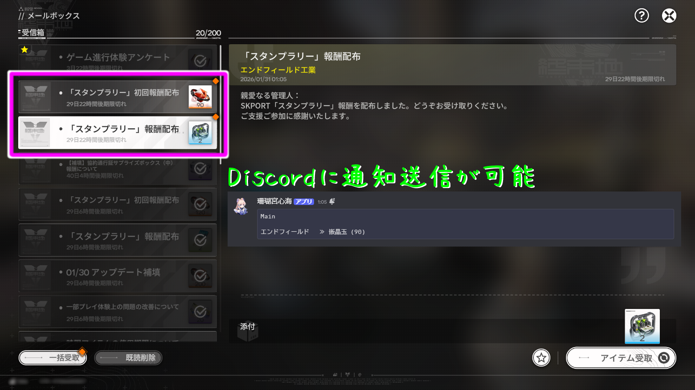

Google Apps Script（GAS）を使用して、アークナイツ：エンドフィールドのログインボーナスを自動的に取得させる
※HoYoverse（原神、スターレイル、ゼンゼロ、崩壊3rd）の自動化はこちら。
※使用に際して如何なる問題が発生した場合であっても、サイト管理人は一切の責任を負いません。
概要
毎日自動でログインボーナスを取得でき、設定することで取得時にDiscordへ通知を送ることも可能です。

設定方法
1. 「
Google Apps Script」から「新しいプロジェクト」を選択して、以下のコード（271行）全文を貼り付けます。
const Accounts = [
{ accountName: "アカウント名",
ArknightsEndfield: true,
ACCOUNT_TOKEN: "000000000000000000000000"
}
];
const discord_notify = false;
const discord_silent = false;
const myDiscordID = "000000000000000000";
const discordWebhook = "https://discord.com/api/webhooks/0000000000000000000/00000000000000000000000000000000000000000000000000000000000000000000";
/** /_/_/_/_/_/_/_/_/_/_/_/_/_/_/_/_/_/_/_/_/_/_/_/_/_/_/_/_/_/_/_/_/_/_/_/_/_/_/_/_/_/_/_/_/_/_/_/_/
※上記が設定項目になります。設定方法につきましては"Honey Apricot"よりご確認下さい。
Honey Apricot（https://genshinvideo.github.io/HuTao/）＞胡蝶の夢と泡沫の夢。＞Gryphline AutoSign
※正常に動作しない可能性がありますので、ここより以下のコードは書き換えないで下さい。
/_/_/_/_/_/_/_/_/_/_/_/_/_/_/_/_/_/_/_/_/_/_/_/_/_/_/_/_/_/_/_/_/_/_/_/_/_/_/_/_/_/_/_/_/_/_/_/_/ **/
const urlDict = {
ArknightsEndfield: 'https://zonai.skport.com/web/v1/game/endfield/attendance'
}
const games = {
ArknightsEndfield: {
name: 'エンドフィールド '
}
};
function main() {
const messages = Accounts.map(autoSignFunction);
if (discord_notify) {
const DiscordMessage = (myDiscordID ? `<@${myDiscordID}> ` : '') + `\`\`\`\n${messages.join('\`\`\`\`\`\`\n')}\`\`\``;
if (discordWebhook) {
postWebhook(DiscordMessage);
}
}
}
function autoSignFunction({ ACCOUNT_TOKEN, ArknightsEndfield, accountName }) {
let cred, salt;
if (ACCOUNT_TOKEN) {
const oauth = fetchCred(ACCOUNT_TOKEN);
cred = oauth.cred;
salt = oauth.salt;
} else {
throw new Error("Token Error");
}
const urls = [];
const postOptionsList = [];
const getOptionsList = [];
if (ArknightsEndfield) {
urls.push(urlDict.ArknightsEndfield);
const timestamp = Math.floor(Date.now() / 1000).toString();
const sign = generateSignV2("/web/v1/game/endfield/attendance", timestamp, salt);
const sk_game_role = getOrCreateSkGameRole(accountName, ACCOUNT_TOKEN, cred, salt, timestamp);
postOptionsList.push(createOptions('POST', {'cred': cred,'sk-game-role': sk_game_role,'timestamp': timestamp,'sign': sign}));
getOptionsList.push(createOptions('GET', {'cred': cred,'sk-game-role': sk_game_role,'timestamp': timestamp,'sign': sign}));
}
let ResultMessage = `${accountName}\n`;
const GetResponses = UrlFetchApp.fetchAll(urls.map((url, i) => ({
url,
...getOptionsList[i]
})));
for (const [i, ResponseRow] of GetResponses.entries()) {
// console.log(JSON.parse(ResponseRow));
const enGameName = Object.keys(urlDict).find(key => urlDict[key] === urls[i]);
const gameName = games[enGameName].name;
let GetResponseJson;
try {
GetResponseJson = JSON.parse(ResponseRow.getContentText());
} catch {
ResultMessage += `\n${gameName} ≫ アカウント情報の取得に失敗しました`;
continue;
}
// console.log(GetResponseJson);
const LoginCheck = GetResponseJson.data?.hasToday;
const LoginCount = GetResponseJson.data?.calendar?.filter(c => c.done).length || 0;
if (LoginCheck) {
ResultMessage += `\n${gameName} ≫［${LoginCount}日目］ログイン済み`
continue;
}
const PostResponse = UrlFetchApp.fetch(urls[i], postOptionsList[i]);
let PostResponseJson;
try {
PostResponseJson = JSON.parse(PostResponse.getContentText());
} catch {
ResultMessage += `\n${gameName} ≫ ログインに失敗しました`;
continue;
}
console.log(PostResponseJson);
const checkInResult = PostResponseJson.message;
ResultMessage = processGameCheckIn(gameName, checkInResult, LoginCount, PostResponseJson, ResultMessage, getOptionsList[i]);
}
return ResultMessage;
}
function processGameCheckIn(gameName, checkInResult, LoginCount, PostResponseJson, ResultMessage, getOptions) {
if (checkInResult !== "OK") {
return ResultMessage + `\n${gameName} ≫ ${checkInResult}`;
}
const awards = PostResponseJson?.data?.awardIds;
const resourceMap = PostResponseJson?.data?.resourceInfoMap;
if (!Array.isArray(awards) || awards.length === 0) {
return ResultMessage + `\n${gameName} ≫［${LoginCount + 1}日目］報酬情報が存在しません。`;
}
const rewardTexts = awards
.map(a => {
const info = resourceMap?.[a.id];
if (!info) return null;
return `${info.name} (${info.count})`;
})
.filter(Boolean);
if (rewardTexts.length === 0) {
return ResultMessage + `\n${gameName} ≫［${LoginCount + 1}日目］報酬詳細の取得に失敗しました。`;
}
ResultMessage += `\n${gameName} ≫［${LoginCount + 1}日目］${rewardTexts.join(' + ')}`;
return ResultMessage;
}
function BuildRolePropertyKey(accountName, accountToken) {
const head = accountToken.slice(0, 2);
const tail = accountToken.slice(-2);
return `${accountName}_${head}${tail}`;
}
function getOrCreateSkGameRole(accountName, ACCOUNT_TOKEN, cred, salt) {
const props = PropertiesService.getScriptProperties();
const key = BuildRolePropertyKey(accountName, ACCOUNT_TOKEN);
const cached = props.getProperty(key);
if (cached) {
return cached;
}
const path = "/api/v1/game/endfield/card/detail";
const timestamp = Math.floor(Date.now() / 1000).toString();
const sign = generateSignV2(path, timestamp, salt);
const res = UrlFetchApp.fetch(
"https://zonai.skport.com" + path,
createOptions("GET", {
cred,
timestamp,
sign
})
);
const json = JSON.parse(res.getContentText());
if (json.code !== 0) {
throw new Error("Failed to fetch sk_game_role");
}
const base = json.data.detail.base;
const region = base.serverName === "Asia" ? 2 : 3;
const sk_game_role = `3_${base.roleId}_${region}`;
props.setProperty(key, sk_game_role);
return sk_game_role;
}
function fetchCred(accountToken) {
const info = JSON.parse(
UrlFetchApp.fetch(
`https://as.gryphline.com/user/info/v1/basic?token=${accountToken}`
).getContentText()
);
if (info.status !== 0) throw new Error("info failed");
const grant = JSON.parse(
UrlFetchApp.fetch(
"https://as.gryphline.com/user/oauth2/v2/grant",
{
method: "post",
contentType: "application/json",
payload: JSON.stringify({
token: accountToken,
appCode: "6eb76d4e13aa36e6",
type: 0
})
}
).getContentText()
);
if (grant.status !== 0) throw new Error("grant failed");
const credRes = JSON.parse(
UrlFetchApp.fetch(
"https://zonai.skport.com/web/v1/user/auth/generate_cred_by_code",
{
method: "post",
contentType: "application/json",
headers: { platform: "3" },
payload: JSON.stringify({
code: grant.data.code,
kind: 1
})
}
).getContentText()
);
if (credRes.code !== 0) throw new Error("cred failed");
return {
cred: credRes.data.cred,
salt: credRes.data.token
};
}
function generateSignV2(path, timestamp, salt) {
const headerJson = JSON.stringify({
platform: "3",
timestamp,
dId: "",
vName: "1.0.0"
});
const raw = `${path}${timestamp}${headerJson}`;
const hmac = Utilities.computeHmacSignature(
Utilities.MacAlgorithm.HMAC_SHA_256,
raw,
salt
);
const md5 = Utilities.computeDigest(
Utilities.DigestAlgorithm.MD5,
toHex(hmac)
);
return toHex(md5);
}
function toHex(bytes) {
return bytes.map(b => {
const v = b < 0 ? b + 256 : b;
return ("0" + v.toString(16)).slice(-2);
}).join("");
}
function createOptions(method, extraHeaders = {}) {
const headers = {
'platform': '3',
'sk-language': 'ja',
'vname': '1.0.0',
'User-Agent': 'Skport/0.7.0 (com.gryphline.skport; build:700089; Android 33; ) Okhttp/5.1.0',
...extraHeaders
};
return {
method,
headers,
muteHttpExceptions: true,
};
}
function postWebhook(data) {
let BotData;
try {
const response = UrlFetchApp.fetch('https://raw.githubusercontent.com/GenshinVideo/HuTao/main/AutoSign2/assets/file/bot.json');
BotData = JSON.parse(response.getContentText());
} catch (e) {
BotData = {};
}
let list = Array.isArray(BotData.list) ? BotData.list : [];
if (list.length === 0) {
list = [{
name: "管理人",
avatar: "https://web-static.hg-cdn.com/endfield/official-v4/_next/static/media/endministrator1.3efd4769.png"
}];
}
const RandomSelect = list[Math.floor(Math.random() * list.length)];
const payload = JSON.stringify({
'username': RandomSelect.name,
'avatar_url': RandomSelect.avatar,
'content': data,
...(discord_silent ? { 'flags': 4096 } : {})
});
const options = {
method: 'POST',
contentType: 'application/json',
payload: payload,
muteHttpExceptions: true
};
UrlFetchApp.fetch(discordWebhook, options);
}
2. ［GAS］アカウント情報を書き換えます。（青文字を参考にしてください。）
const Accounts = [
{ accountName: "アカウント名", /** 自由に書き換えられます。 **/
ArknightsEndfield: true, /** ログインボーナスを取得して欲しい場合は「true」に、そうでない場合は「false」と書き換えます。 **/
ACCOUNT_TOKEN: "000000000000000000000000" /** 自身のアカウント情報に書き換えて下さい。 **/
}
];
※アカウント情報（
ACCOUNT_TOKEN）は以下の手順で取得できます。
1. 「
SKPort Endfield Portal」にログインします。
2. 開発者ツール（F12）を開き、Cookies を確認します。
Chrome：Application → Cookies
Firefox：Storage → Cookies
3. Cookie の中から
ACCOUNT_TOKEN を探し、必要に応じて URL デコード（
%2F を
/ に置換）します。
アカウントが複数ある場合は、以下のように行を追加し、同様の設定を行ってください。
const Accounts = [
{ accountName: "アカウント名",
ArknightsEndfield: true,
ACCOUNT_TOKEN: "000000000000000000000000"
},
{ accountName: "アカウント名 2",
ArknightsEndfield: true,
ACCOUNT_TOKEN: "000000000000000000000000"
}
];
4. ［GAS］Discordの通知設定を書き換えます。（青文字を参考にして下さい。）
const discord_notify = true; /** Discordに通知を送信する場合は「true」を、そうでない場合は「false」と書き換えます。 **/
const discord_silent = false; /** 通知を行う際に、通知音を鳴らさない場合は「true」を、そうでない場合は「false」と書き換えます。 **/
const myDiscordID = "000000000"; /** 通知を行う際に、自身にメンションする場合は『ユーザーID』を、そうでない場合は『空（""）』に書き換えます。 **/
const discordWebhook = "https://discord.com/api/webhooks/000000000/OOOOOOOOO"; /** 通知を行う際に、メッセージを送信するテキストチャンネルのウェブフックURLに書き換えて下さい。 **/
※「ユーザーID」と「ウェブフックURL」は、Discordから取得できます。
・ユーザーID
設定 ≫
詳細設定 ≫
開発者モードをONにした後、設定を閉じます。
左下の自分のアイコンをクリックし、
ユーザーIDをコピーを選択します。
・テキストチャンネルのウェブフックURL
通知を送信したいテキストチャンネルを右クリックし、
チャンネルの編集 ≫
連携サービス ≫
ウェブフック ≫
新しいウェブフック ≫
ウェブフックURLをコピーを選択します。
※スマホアプリからはウェブフックの作成ができないため、ブラウザから「
Discord」を開いて作成してください。
5. ［GAS］実行テストを行います。
スクリプトの書き換えが完了したら保存し、画面上部にある
実行ボタンをクリックして、実際に処理が行われるか確認します。
ログインボーナスが取得される、またはDiscordへ通知が送信されていれば、正常に動作しています。
6. ［GAS］トリガーを設定します。
画面左側のメニューから
トリガーを選択し、
トリガーを追加をクリックします。
実行する関数を選択：main
実行するデプロイを選択：Head
イベントのソースを選択：時間主導型
時間ベースのトリガーのタイプを選択：日付ベースのタイマー
時刻を選択：午前1時～2時
エラー通知設定：任意
上記の設定で保存すると、毎日指定した時間帯に自動で処理が実行されます。